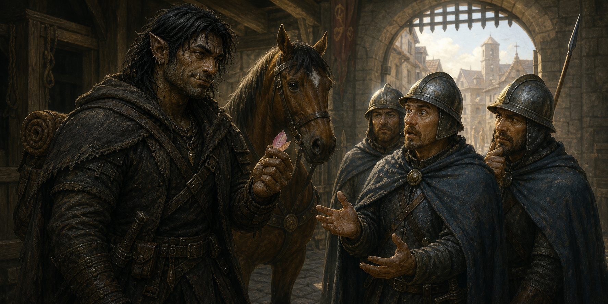

Chapter 5: Farewell, Wescoe
Dark Petals


Dark Petals
15048.11.20
看著自己才剛買不久的地圖，布朗思索著下一步該往哪裡走。無論選哪個方向，他都得先穿越嚎叫森林。
幾經考慮後，布朗決定前往夏庭森。據說那裡是一座大多數居民都是石匠的村落。然而路程並不短，布朗希望自己有機會能弄到一匹馬。
回頭望著方才在他眼中宛如廢墟般的魏斯科，布朗忽然生出一股奇異的直覺，決定再次踏進城門內。跟在後頭的瑪芬先生嚇得瑟瑟發抖，完全不敢進去，於是布朗只好獨自返回城內。誰知道他才一跨過城門，城裡便像什麼事都沒發生過一樣，依舊一片繁華，讓布朗大感詫異。
布朗東張西望，思索著該去哪裡弄到一匹馬，於是隨手向路邊一名衛兵詢問。衛兵聽完後，便帶著他穿過衛兵辦公室，來到馬廄。在對方的介紹下，布朗得知了本地馬匹的大致價格。
見馬廄裡除了帶路的衛兵外，只剩另外兩名衛兵正在一旁閒聊，布朗便起了歪腦筋。他對帶路的衛兵說自己有點口渴，不知道能不能弄點水喝。那名衛兵於是回辦公室替布朗裝水，並要他趁這段時間慢慢看看各匹馬。
趁著那名衛兵離開，布朗走向馬廄裡最昂貴的那匹馬，兩名原本在聊天的衛兵便注意到了他。布朗試著殺價，但效果有限。於是他從背包裡掏出一片蓮花花瓣，向衛兵們推銷，聲稱這是一件魔法物品，能把人送上天堂。兩名衛兵都將信將疑，但布朗表示可以讓其中一人免費試用看看。
就在那名衛兵舔下花瓣的瞬間，他便憑空消失了。另一名衛兵驚得目瞪口呆，也立刻對花瓣起了興趣。這時，去替布朗裝水的衛兵剛好走了回來。三人很快談起交易內容。布朗提出以一片花瓣換一匹馬，其中一名衛兵想了想，反而提出另一個方案：用兩片花瓣換走馬廄裡最頂級的馬，還順便貼一點錢給布朗。布朗想了想，便答應了。
把花瓣交給兩名衛兵後，布朗翻身上馬，頭也不回地騎出了魏斯科。到了城門外接上瑪芬先生後，他便朝著夏庭森的方向前進。
15048.11.20
Looking over the map he had only recently bought, Brown considered where he should go next. No matter which direction he chose, he would first have to cross the Howling Forest.
After some thought, Brown decided to head for Shartingson. It was said to be a village where most of the residents were stonemasons. The journey was not short, however, and Brown hoped he might somehow get his hands on a horse.
Looking back at Wescoe, which had seemed like a ruin only moments before, Brown felt a strange instinct urging him to step through the city gate once more. Mr. Muffins trembled behind him and refused to go in, so Brown entered alone. The moment he crossed the gate, the city looked completely normal again, thriving as if nothing had ever happened. Brown was stunned.
He looked around, wondering where he might get a horse, and casually asked a nearby guard. The guard led him through the guards' office and into the stables. There, he explained the usual prices for horses in town.
Seeing that aside from the guard who had brought him there, only two other guards were chatting in the stable, Brown got a bad idea. He told the guide that he was feeling thirsty and wondered whether he could get something to drink. The guard went back to the office to fetch him water and told Brown to take his time looking over the horses while he was gone.
While the guard was away, Brown walked over to the most expensive horse in the stable, which immediately drew the attention of the other two guards. He tried haggling, but made little progress. So he took out one of the lotus petals from his bag and tried to sell it to them, claiming that it was a magical item that could send a person straight to heaven. The guards were deeply skeptical, but Brown offered to let one of them try it for free.
The instant the guard licked the petal, he vanished. The other guard was astonished and suddenly became very interested in the petals as well. Just then, the guard who had gone to fetch water came back. The three quickly began negotiating. Brown first proposed trading one petal for one horse. One of the guards thought it over and countered with a new offer: Brown could trade two petals for the finest horse in the stable, and they would even throw in some cash. Brown considered it, then agreed.
After handing over the petals, Brown mounted the horse and rode out of Wescoe without looking back. Once he picked up Mr. Muffins outside the gate, he set off toward Shartingson.